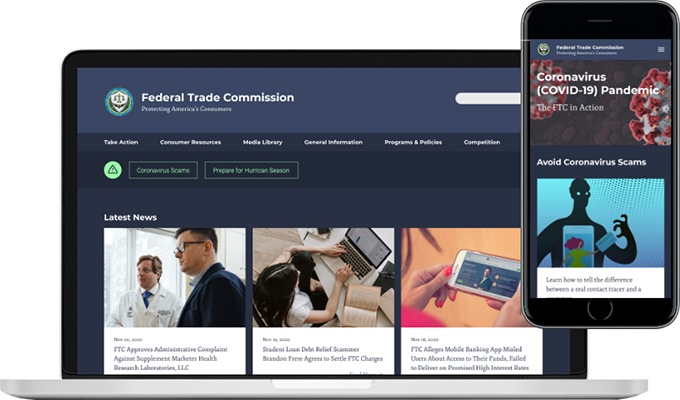
Government Website Redesign
UX Research:
Tim Schutz, Patrick Trepanier
UX Design:
Tim Schutz, Patrick Trepanier
The Challenge
The Federal Trade Commission is a sprawling organization whose principle mission is the enforcement of civil U.S. antitrust law and the promotion of consumer protection. Our challenge was to redesign their website to better organize information and create a smoother user experience.
Proto Persona
The proto-persona is a hypothetical user based on educated assumptions by the designers. This allows the creative team to start the design process without having to know every detail of our potential user.

Greg Jones
Behavioral Demographics
- 42 years old
- Logistics Manager
- Married
- Enjoys Biking
- Travels for work
Pain Points
- Doesn't want to waste time
- Filling out redundant forms
- Gathering the necessary info to file a claim is time consuming
- Changing account info takes time
Goals and Needs
- Needs easy access to forms
- Needs to be able to save progress and revisit site
- Needs to research fraud in his area
- Wants to see if he is registered on the National Do Not Call list
Solutions
- A better organized and clear navigation
- Information heirarchy that is organized in a way that makes sense
- Relevant information that is located on the homepage
A brand positioning statement outlines exactly what your company does, for whom, and what makes you different. The idea behind it is to create a unique niche for your brand in the minds of consumers within your category. We took what we knew of the Federal Trade Commission based on our research and created a brand positioning statement for our project.
Brand Positioning Statement
The resources and protections we provide help the Federal Trade Commision accomplish informing and protecting by providing educational and empowering content that makes American consumers feel confident and safe so they can participate in the marketplace and know they aren’t being taken advantage of.
For our initial user testing we had a demographically diverse group of people run through a variety of tasks on the existing FTC site. Through this we were able to discover common pain points and challenges that the average user would encounter.
User Research Plan
Research Question:
Find out where user pain points lie while navigating the FTC website.
We wanted to find out:
Can the user verify they are registered on the Do Not Call list?
Can they find data and visualization for fraud by each state?
Can they download literature that informs how to tell the difference between a real contact tracer and a scammer?
Mood Board
Our goal was to visually communicate a sense of strength and confidence in the agency, while creating a clear and logical layout that would enable users to access protections and information.
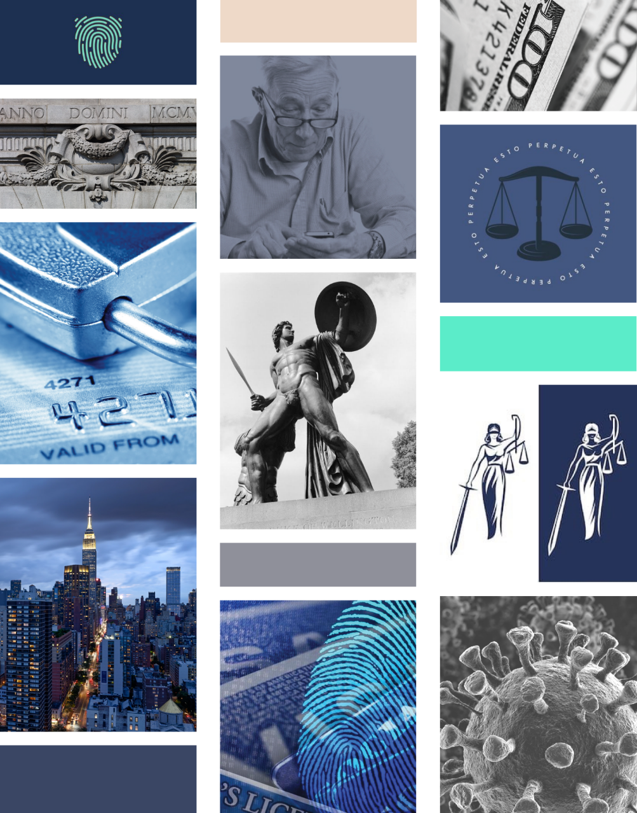
We found the card sorting exercise challenging. The Federal Trade Commision is such a broad organization, that breaking down the homepage to its links created many (seemingly) random names and programs. In the end, we found a way to re-contextualize the information in a way that allows users to more easily navigate to their desired destination.
Site Map
Pulling the data from card sorting, we plugged it into a sitemap. This process revealed additional cards that could be purged or combined to further streamline our navigation bar. Once complete, we were ready to work on a mockup using the sitemap to guide us.
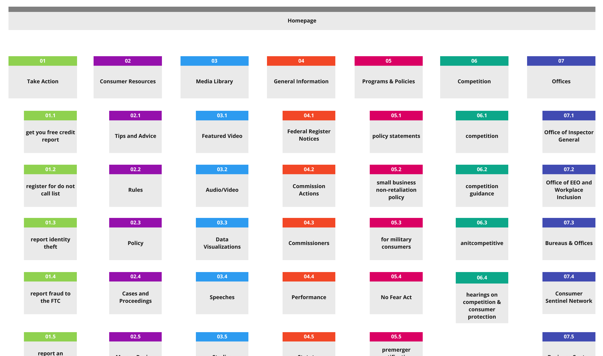
Mid Fidelity Prototypes
When designing our mobile interface, we wanted to avoid information overload, especially hard given the content of the website. To achieve this, we went with a dropdown-style menu that would allow the user to incrementally access more information as they made progress, but also give them an easy way to take a step back if they realized they weren’t going down the right path. We took a similar approach to the desktop interface, which also utilized our reorganization of categories to give the user a clearer starting point.
Desktop
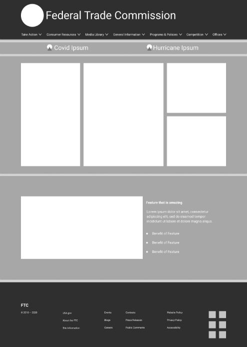
A
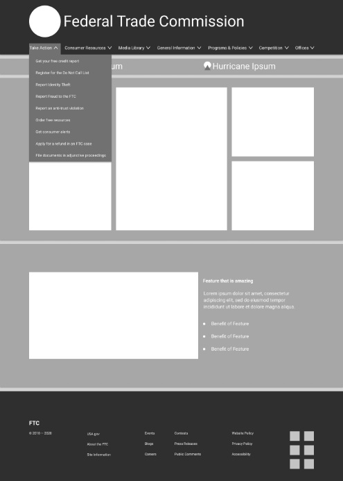
Mobile
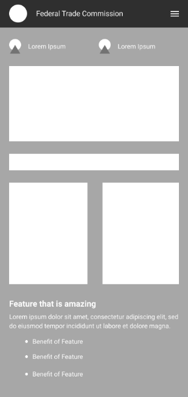
A
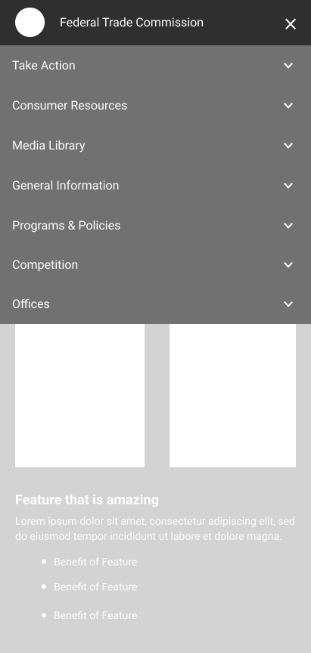
A
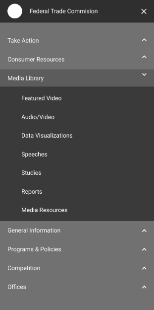
UI Style Guide
Once we started building out our high fidelity prototype, we made a few changes to the style guide. This was primarily done to increase overall usability while still resulting in a consistent look across pages.
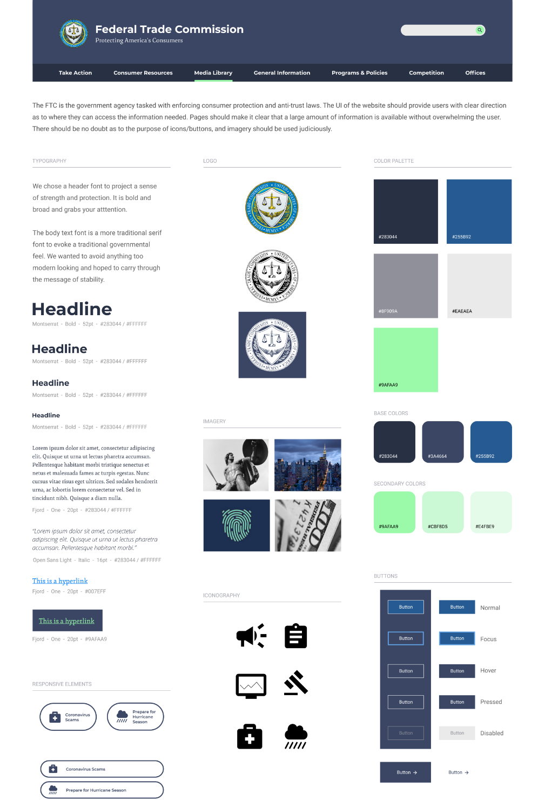
High Fidelity Prototypes
With our high fidelity prototype we created a more consistent look and feel across all the pages regardless of device. More importantly, we implemented a revised navigation layout that resulted in a more user friendly browsing experience.
Desktop
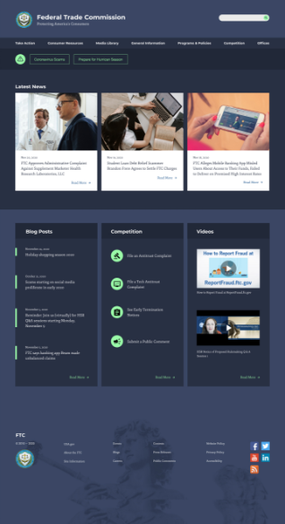
A
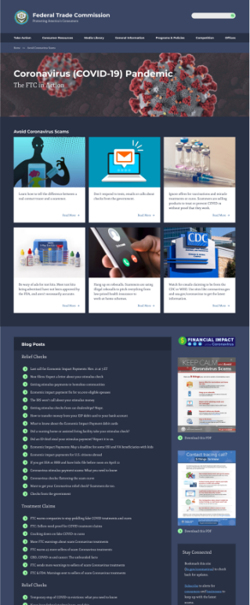
A
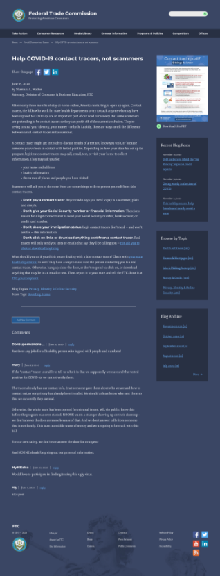
Mobile
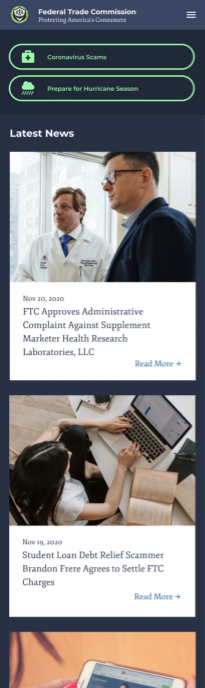
A
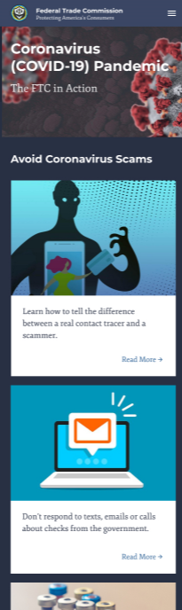
A
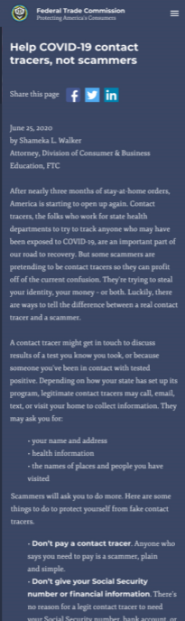
A
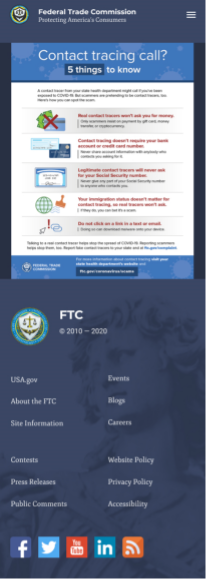
Final Thoughts
By the end of this project we felt we had successfully used our existing design skills in conjunction with our new UX/UI design knowledge to analyze and improve the navigation on the FTC website. From the initial testing we found many aspects to improve upon, and during the redesign process we also discovered areas for additional improvement.
A challenge we overcame in the redesign process was taking the very broad and expansive FTC website and presenting it in a way that was more palatable and less overwhelming. In the final stages, we were happily surprised by our testing, with near 100% success on our testing tasks. Overall we feel we learned a lot during this project and accomplished our goal of creating a more user friendly FTC website.